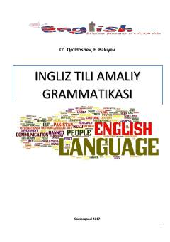

ITIngliz tili grammatikasini o'rganish uchun mo'ljallangan amaliy qo'llanma.
Ushbu qo'llanma ingliz tili grammatikasining asosiy qoidalarini, jumladan zamonlar, fe'llar, artikllar va gap tuzilishini qamrab oladi. Kitob o'quvchilarga ingliz tilini amaliy o'rganishda yordam beradigan nazariy ma'lumotlar va misollarni o'z ichiga oladi.